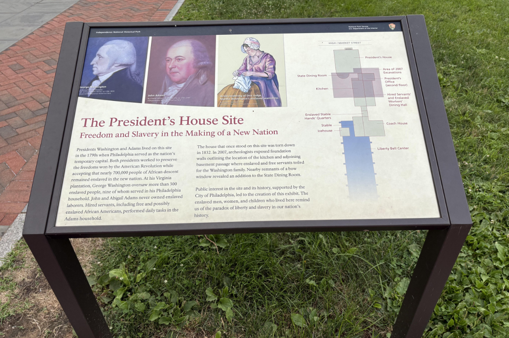
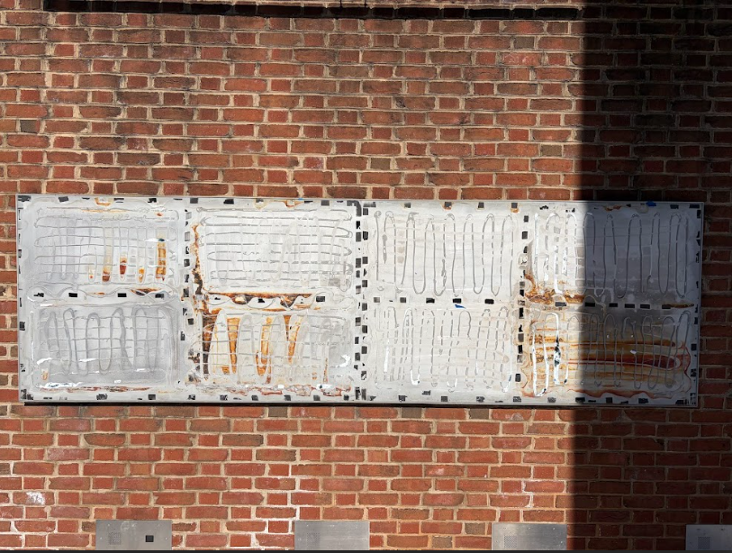
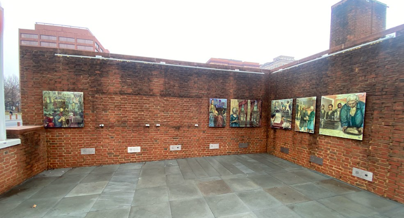
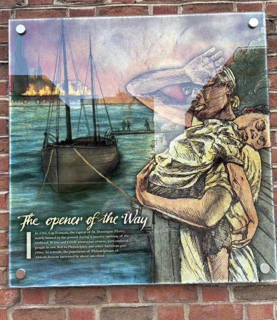
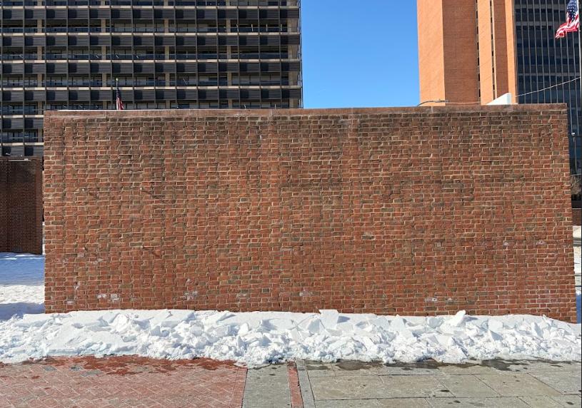
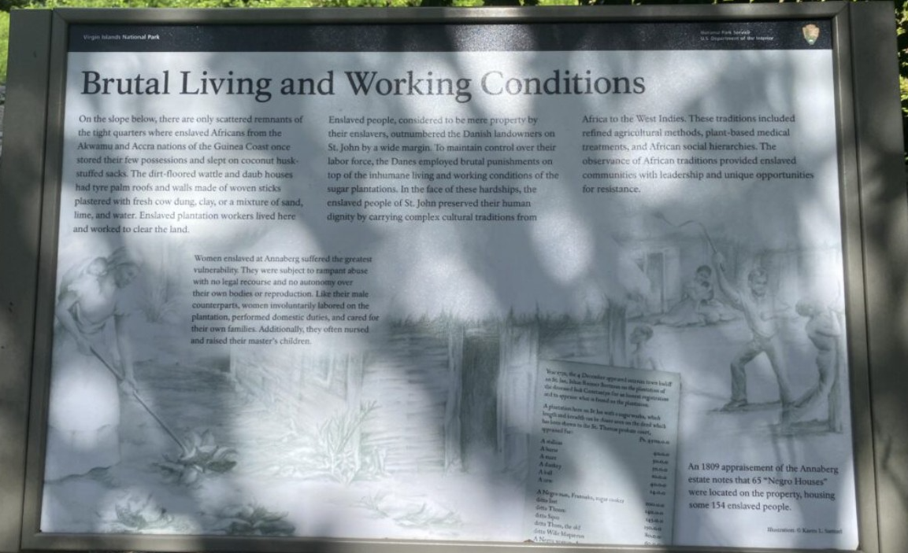
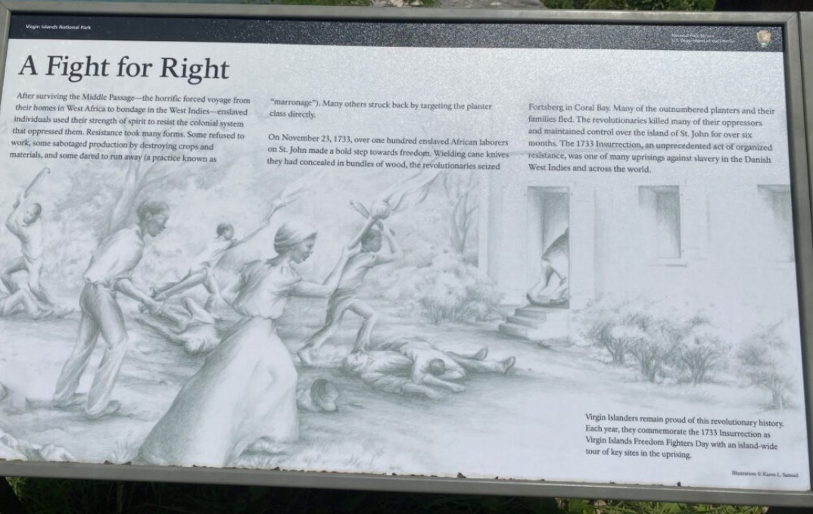
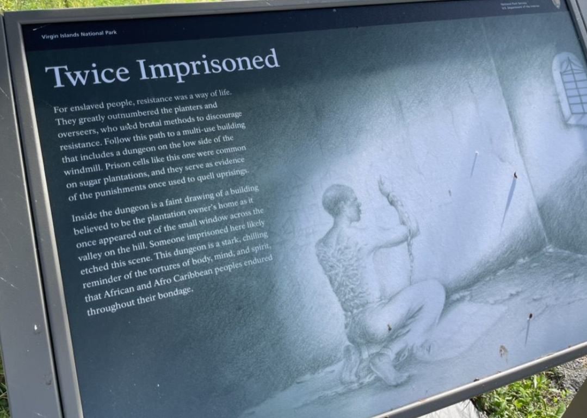
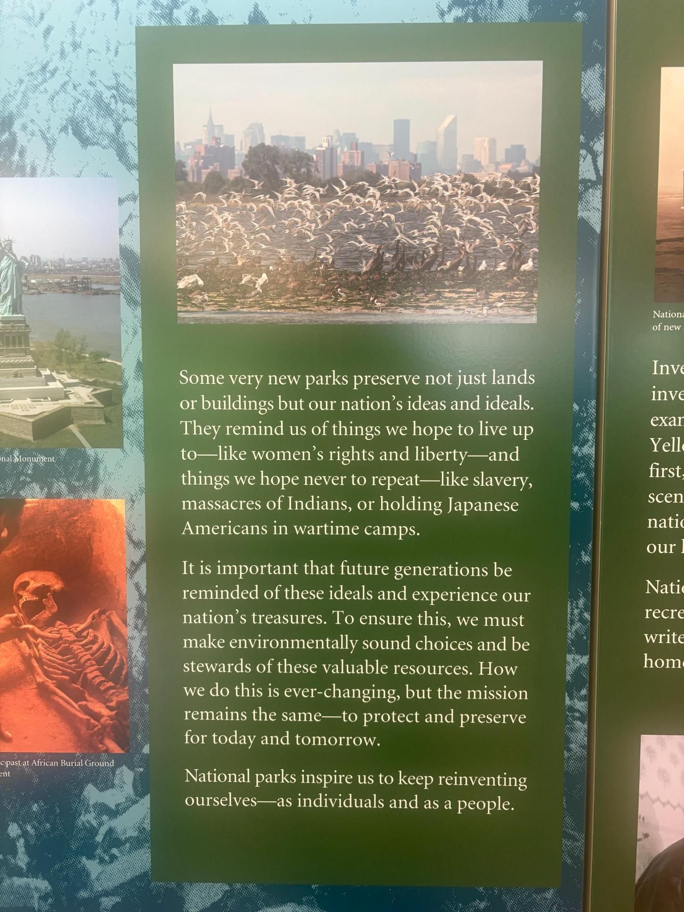
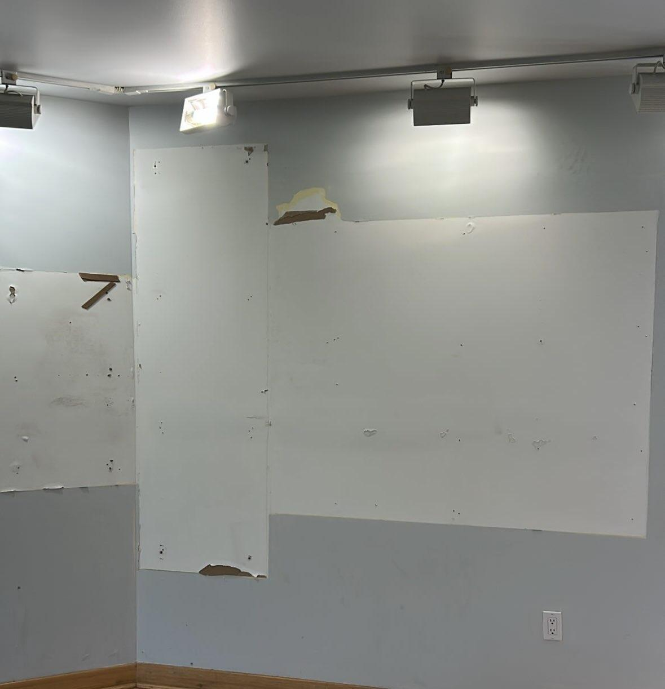

92 interpretive exhibits about slavery and enslaved people have been flagged or removed from 45 national parks and historic sites. These are the places created to tell this story.
92 interpretive exhibits about slavery and enslaved people have been flagged across 45 national parks and historic sites. Of these, 8 have been confirmed removed. The censorship targets the very places created to tell the story of slavery in America — plantation sites, battlefields, and historic buildings where enslaved people lived and labored.
The most high-profile removal was at Independence National Historical Park in Philadelphia, where the "Freedom and Slavery in the Making of the Nation" exhibit was dismantled on January 22, 2026. The exhibit, located steps from where the Declaration of Independence was signed, told the story of enslaved people in the founding era. A federal judge later ordered it restored, calling the removal likely unlawful.
At Fort Sumter and Fort Moultrie in South Carolina, five entries about slavery have been flagged and five confirmed removed — at the very site where the Civil War began. At Christiansted National Historic Site in the U.S. Virgin Islands, nine entries about the enslaved people who built and sustained the sugar plantations have been flagged.
You cannot tell the story of these places without telling the story of slavery. Many of the sites targeted by SO 3431 were established specifically to preserve and interpret the history of enslaved people. Removing that history doesn't make it disappear — it just makes Americans less able to understand their own country.
Active Legal Challenges: Two lawsuits challenge NPS sign removals, including the President's House panels. City of Philadelphia v. Doug Bergum (2:26-cv-00434, E.D. Pa.) argues removals violated a 2006 agreement requiring the site to commemorate enslaved Africans. NPCA v. Department of the Interior (1:26-cv-10877, D. Mass.) challenges removals system-wide. Both cases remain ongoing. Full legal timeline →
Interactive map filtered to slavery and enslaved people entries. Click any pin for details.



"The President's House Site: Freedom and Slavery in the Making of a New Nation" told the story of the enslaved people who worked in George Washington's Philadelphia household. The panels were ripped from the walls, leaving adhesive residue on the brick. A federal judge ordered them restored in February 2026.
Photos from Save Our Signs Removal Tracker
In 1790, George Washington brought eight enslaved people from Mount Vernon to serve in the President's House in Philadelphia — among them Oney Judge, who would later escape to New Hampshire, and Hercules, his chief cook. Pennsylvania's Gradual Abolition Act of 1780, the first legislative abolition of slavery in the United States, entitled enslaved people to claim freedom after six months of residency. Washington deliberately rotated his enslaved workers back to Virginia every six months to prevent them from gaining their freedom under that law. The exhibit that told this story opened on December 15, 2010, steps from where the Declaration of Independence was signed.
On January 22, 2026, NPS employees dismantled the exhibit. On February 16, U.S. District Judge Cynthia Rufe — a George W. Bush appointee — ordered it restored, writing: "As if the Ministry of Truth in George Orwell's 1984 now existed, with its motto 'Ignorance is Strength,' this Court is now asked to determine whether the federal government has the power it claims — to dissemble and disassemble historical truths when it has some domain over historical facts. It does not." A Third Circuit judge paused the injunction one hour before the restoration deadline. The case remains in litigation.


A painted mural depicting the lives of enslaved people at the President's House was stripped from the outdoor exhibit wall. The SOS Tracker documents 26 panels removed from this single site — the largest concentration of removals in the tracker.
Photos from Save Our Signs Removal Tracker
The 26 removed panels told the stories of individual enslaved people — their names, their work, their resistance. Panels like "The Dirty Business of Slavery," "Life Under Slavery," and "Oney Escapes!" gave visitors the names the Declaration of Independence left out. Oney Judge, Martha Washington's personal attendant, escaped in May 1796 at age 20, aided by Philadelphia's free Black community. Hercules, Washington's enslaved chef, also escaped. These were not abstract historical figures — they were people who lived and worked on this exact ground.

This sign at Virgin Islands National Park described the brutal conditions endured by enslaved people on sugar plantations in the U.S. Virgin Islands. Five slavery-related signs were flagged at this park.
Before photo from Save Our Signs Removal Tracker
The Danish colonized St. John in 1718 to develop sugar plantations. By 1733, 109 plantations operated on the island, with enslaved Africans comprising the vast majority of the population. At Annaberg Plantation alone, over 600 enslaved people worked 18–20 hour days during harvest, with a life expectancy of just 7–9 years. On November 23, 1733, enslaved Akwamu people launched one of the earliest slave rebellions in the Western Hemisphere, seizing control of the island for nearly nine months before French troops from Martinique restored colonial rule.
The removed signs — installed in 2023 after extensive community engagement with local historians and the St. John Historical Society — told the stories of people like Carl Francis, born into slavery at Annaberg in 1800, who later owned the plantation himself. The signs included artwork from local artists depicting the brutal life of enslaved people in the Caribbean. Denmark did not abolish slavery in the Virgin Islands until 1848. The signs were removed by February 4, 2026.
Archaeological sites belonging to the Taíno people — the indigenous inhabitants of St. John before European colonization — were also targeted. PEN America condemned the removals, noting that the signs represented a deliberate NPS effort to more accurately interpret the island's history. The Virgin Islands Daily News reported widespread community outcry over the erasure of history that local residents had worked years to see properly told. See also: Indigenous History Censorship for more on the Taíno archaeological context.

A Fight for Right — Describes the 1733 Akwamu slave rebellion
Photos from Save Our Signs Removal Tracker

Twice Imprisoned — Documents the dungeons used to imprison enslaved people
Photos from Save Our Signs Removal Tracker


Gateway National Recreation Area displayed materials about preserving national ideals with references to slavery, massacres of Native Americans, and Japanese American internment. Interior walls of the visitor center now show where exhibit panels were stripped.
Photos from Save Our Signs Removal Tracker
The President's House: George Washington brought nine enslaved people to Philadelphia while serving as president in the 1790s, including Oney Judge, Martha Washington's personal maid who escaped enslavement in 1796 and fled to New Hampshire, and Hercules, the chief chef who escaped in 1797 and lived in New York under an assumed name. The "Freedom and Slavery in the Making of a New Nation" exhibit, unveiled in December 2010, interpreted the lives of these nine people at the site where they were enslaved — steps from where the Declaration of Independence was signed.
Virgin Islands: On November 23, 1733, enslaved Akwamu people launched one of the first major slave rebellions in the Caribbean on St. John. Approximately 150 enslaved people seized the fort at Coral Bay and held the island for months. When European forces closed in, a group of rebels fled to a cliff at Ram Head and took their own lives rather than face capture. The removed signs — "Brutal Living and Working Conditions," "A Fight for Right," and "Twice Imprisoned" — told this story.
Photos courtesy Save Our Signs (public domain). Help document signs at your local park by submitting photos at saveoursigns.org.
On January 22, 2026, NPS staff removed the President's House exhibit panels. On February 16, 2026, U.S. District Judge Cynthia M. Rufe ordered them restored, writing: "As if the Ministry of Truth in George Orwell's 1984 now existed, with its motto 'Ignorance is Strength,' this Court is now asked to determine whether the federal government has the power it claims — to dissemble and disassemble historical truths when it has some domain over historical facts. It does not." The NPCA-led coalition represented by Democracy Forward has filed for a preliminary injunction to halt all such removals nationwide.
The Organization of American Historians issued a formal statement condemning the Independence Hall removal, calling it "an attack on the historical record itself." The American Historical Association endorsed the statement.
See all 444 entries across every national park and wildlife refuge.
🗺 Open Interactive Map